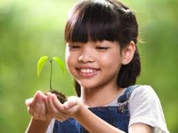

Nature's Mercy

Nature Smiles
Natures Beauty

The natural world is an incredible wonder that inspires us all. It underpins our economy, our society, indeed our very existence.
Our forests, rivers, oceans and soils provide us with the food we eat, the air we breathe, the water we irrigate our crops with.
Unfortunately, most people have forgotten about the beauty of it and that's very sad since we all depend on it.
Human have become self that they dont see the damage they cause but wishes to progress to the moon.
Someone needs to remind them that, some things will be hard to find elsewhere (moon) they should take care of what they have first.
I choose to be that person. I choose to be an ambassador of nature
Am Rodger Philip a photographer and a web designer by profession.


These songs remind us, to be kind on each other and to the nature itself.
For it is our nature to help and thrive through one another but when we defy that alot more awful things happens. when we fail to take care of nature, it fails and we fall.